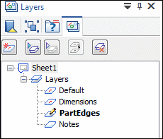
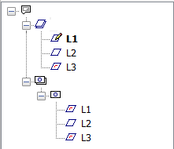

Layers overview
Layers and layer display settings help you group elements, which can make it easier to show and hide them and to keep track of different types of information.
When you create 2D elements in Solid Edge, they are assigned to a layer when you are:
-
On a drawing sheet
-
On a drawing view
-
On a part sketch
-
On an assembly layout
There are some differences in the layer functionality in the Draft environment and the layer functionality when working with a sketch in the 3D environments.
Layers tab
The Layers tab manages the layers in the document. The Layers tab displays a graphical list of the layers on a drawing sheet or sketch, as well as a hierarchy of the layers in the drawing views on a drawing sheet.
The Layers tab is located in the docking pane tab set that contains the Library pane (in draft documents), PathFinder (in part and sheet metal documents), and Assembly PathFinder (in assembly documents).

Determining the status of a layer
The following table explains the symbols used on the Layers tab.
|
Icon |
Status |
|
Active layer Note:
On the sheet view of the Layers tab, the active layer name is displayed in boldface (L1).  Layer names below the drawing views symbol do not indicate an active layer. For drawing views, the active layer is displayed only when you are using the Draw in View command. |
|
|
Occupied layer |
|
|
Empty layer |
|
|
|
Hidden Layer |
|
|
Non-locatable layer |
|
Note:
The symbols on the Layers tab can also represent combinations of conditions. For example, a symbol can show that a layer is occupied and hidden. |
|


Layers in the Draft environment
When working with layers in the Draft environment, all the layers you create are available on all the drawing sheets in the document, but you can manage the display of a layer on a sheet by sheet basis. For example, you can hide Layer 1 on Sheet 2, but display Layer 1 on Sheet 3.
The Auto-Hide layer is available at all times when working on the 2D Model sheet.
Layers in the 3D environments
When you create 2D elements for a part sketch or assembly sketch, the elements are assigned to the active layer. When you create 2D elements as part of a local profile for a profile-based feature, they are not assigned to a layer.
When a layer is occupied in the 3D environments, the Layers tab displays the layer name using bold text. When a layer is occupied in the Draft environment, bold text is not used. In both the Draft and 3D environments, the symbol adjacent to the layer entry on the Layers tab indicates whether the layer contains elements.
Translated files and layers
When you translate a foreign document into a Solid Edge draft document, the layer scheme of the foreign document is maintained.
You can use the Delete Unused Layers command to remove all unused layers at once in AutoCAD documents migrated to Solid Edge.
If you export your Solid Edge draft document to AutoCAD, any unsupported characters in layer names, including spaces, are converted to underscores in AutoCAD. Also, even though a layer can contain 250 characters, only AutoCAD version 2000 supports long layer names. If you export to any other version of AutoCAD, long layer names are truncated to 26 characters.
How do I
Display the active layer nameFind the layer of an element
Change the active layer
Create a new layer
Delete one or more layers
Rename a layer
Sort blocks, layers, or groups
Move an element to another layer
Add properties to a layer
Learn more
Naming layersAssigning elements to layers
Look up more details
Layer status iconsMove Elements dialog box
Layer Properties dialog box